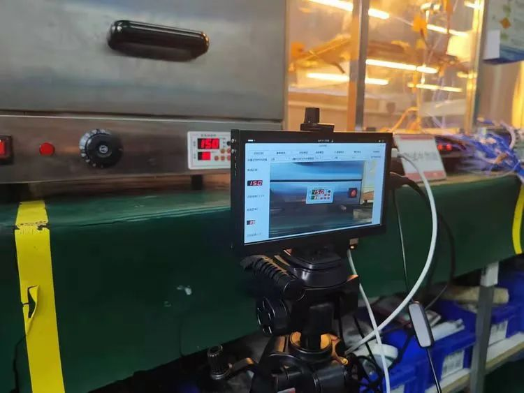
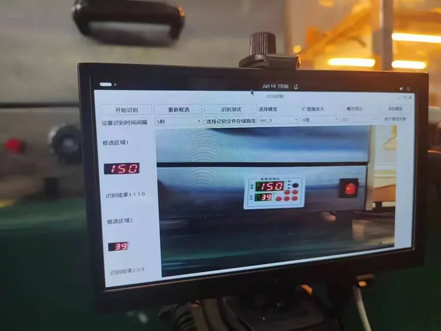

湖北春晖
图像识别与视觉检测系统
智能化、自动化的产品质量检测解决方案
由湖北春晖信息技术有限公司研发的图像识别与视觉检测系统，
是一款专门设计用于无人化产品质量检测的高科技设备。
它能有效降低人工质检的经济成本和时间成本，同时显著提高
产品生产过程中的质检效率，确保产品质量。
自动化
智能化
高效率
高精度
多功能
多场景
 
产品特点
详细信息
适用性强：可在不同环境下使用
检测精度高：一般环境下的数据识别成功率较高
实时监控：实时掌控产品数据
无人监管：实现自动化数据检测
软件环境
语言环境：Python 3.12
深度学习框架：PaddleOCR
应用程序框架：Pyside2
图形处理库：OpenCV
运行系统：Ubuntu 22.04
硬件环境
核心设备：树莓派 (Raspberry Pi) 5
CPU：推荐主频为2.0GHz及以上
RAM：推荐2GB及以上
硬盘：推荐30GB及以上
图像采集设备：推荐720p及以上